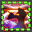

The Dumb Meditation Tracker
What it do?
The Meditation Tracker is quite self explanatory in the sense that it keeps track of your Meditation stacks in a better way than showing them in the buff bar.
Currently the features implemented are
- A visual gauge, either in the style of Aetherflow or in the style of a "simplified" gauge (see above).
- An Audio que for reaching 3 stacks, the same audio que as is used once any job gauge is maxed out (such as kenki).
- A Text-to-Speech callout when you gain stacks.
- A Combo ring meant to be placed on the Shoha button on your hotbar that will display once you've reached 3 stacks.

These features can be disabled/modified individually so you can more or less get the setup you'd like.
How it install?
Installing triggers in Triggernometry is pretty straightforward. I am at this point assuming you have Triggernometry installed.
The Dumb Monker Suite - Readme
A suite centered around faux-combo rings, which are intended to advice you on what steps to take in your rotation.
The Dumb Meditation Tracker - Readme
A (pretty) simple visual/audial aid for the new Meditate stacks samurai gained in 5.1
If you have any questions, feedback or problems, drop me a message on discord.